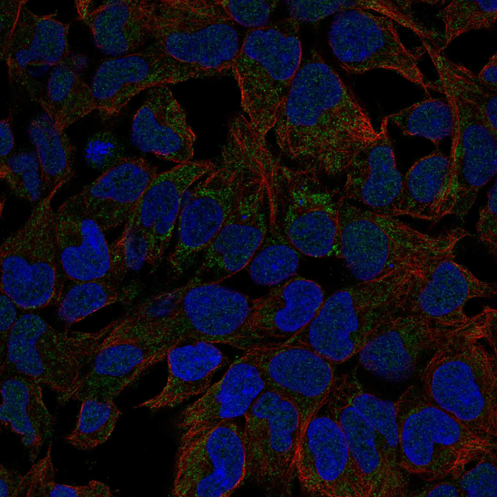
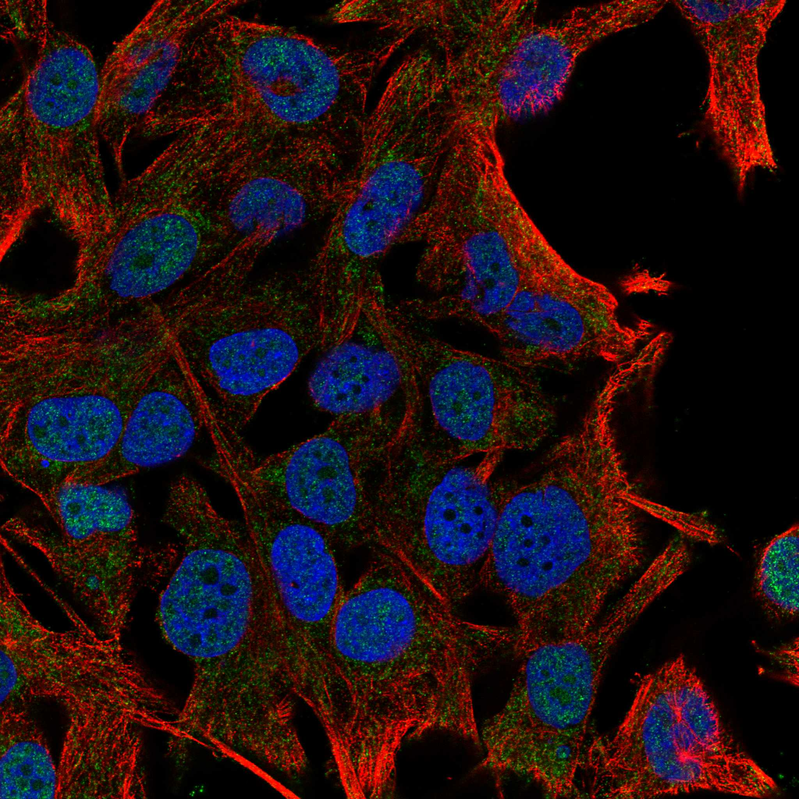
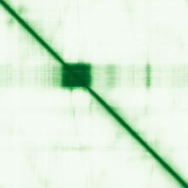

type: protein-evaluation gene: "IRX6" date: 2026-05-30 tags: [protein-scout, nuclear-protein, evaluation] status: scored ---
IRX6 核蛋白评估报告
1. 基本信息
| 项目 | 内容 | ||
|---|---|---|---|
| 基因名 / 别名 | IRX6 / IRX6 | IRX3 | IRXB3 |
| 蛋白全称 | Iroquois-class homeodomain protein IRX-6 | ||
| 蛋白大小 | 446 aa / ~49.1 kDa | ||
| UniProt ID | |||
| 评估日期 | 2026-05-30 |
IF 图像:  
2. 评分总览
| 维度 | 得分 | 满分 | 加权后 | 关键证据摘要 |
|---|---|---|---|---|
| 核定位特异性 | 9/10 | x4 | 36 | 严格核蛋白：UniProt Nucleus + GO 支持（HPA 无 IF 数据） |
| 蛋白大小 | 10/10 | x1 | 10 | 446 aa，适宜 |
| 研究新颖性 | 8/10 | x5 | 40 | PubMed 29 篇 |
| 三维结构 | 6/10 | x3 | 18 | 新颖蛋白基线 (6/10) |
| 调控结构域 | 10/10 | x2 | 20 | 明确 chromatin/DNA-binding 结构域 |
| PPI 网络 | 4/10 | x3 | 12 | STRING 预测互作，调控因子部分 (4/10) |
| 互证加分 | +0 | max +3 | +0 | — |
| 原始总分 | 136/183 | |||
| 归一化总分 | 74.3/100 |
3. 详细分析
3.1 核定位证据
| 来源 | 定位 | 可信度 | |
|---|---|---|---|
| GeneCards | Nucleus | — | |
| Protein Atlas (IF) | IF image available (embedded above) | See IF_images/ | |
| UniProt | Nucleus | — | |
| GO Cellular Component | chromatin | nucleus | — |
HPA IF 图像已重新获取并嵌入（见下方 HPA IF 图像修正块）；此前“暂无/未可靠获取 IF”的表述为采集失败导致的误报。
3.2 蛋白大小评估
评价: 446 aa (~49.1 kDa)，适合常规生化实验和结构解析，大小接近理想范围（200–800 aa）。
3.3 研究现状
| 指标 | 数值 |
|---|---|
| PubMed 总数 | 29 |
| 新颖性评级 | 非常新颖 |
主要研究方向:
- Iroquois-class homeodomain protein IRX-6 的功能研究
- 转录调控/信号传导相关
评价: PubMed 29 篇，研究较少，属于非常新颖的蛋白。
关键文献: 1. Ngoh A et al. (2025). "Clinical and Molecular Genetic Characterization of Landau Kleffner Syndrome: An Observational Cohort and Experimental Study". *Ann Neurol*. PMID: 40944498 2. Xue JY et al. (2024). "COBRA-LIKE4 modulates cellulose synthase velocity and facilitates cellulose deposition in the secondary cell wall". *Plant Physiol*. PMID: 39230913 3. Catela C et al. (2024). "The Iroquois (Iro/Irx) homeobox genes are conserved Hox targets involved in motor neuron development". *bioRxiv*. PMID: 38853975 4. Mummenhoff J et al. (2001). "Expression of Irx6 during mouse morphogenesis". *Mech Dev*. PMID: 11335133 5. Nagel S (2023). "The Role of IRX Homeobox Genes in Hematopoietic Progenitors and Leukemia". *Genes (Basel)*. PMID: 36833225
3.4 三维结构分析
| 指标 | 数值 |
|---|---|
| AlphaFold 全局 pLDDT | 54.53 |
| pLDDT > 90 占比 | 10% |
| pLDDT > 70 占比 | 13% |
| AlphaFold 版本 | v6 |
| 可用 PDB 条目 | 0 个 |
PAE 图: 
评价: 新颖蛋白基线 (6/10)。
3.5 结构域分析
| 来源 | 结构域 |
|---|---|
| UniProt InterPro | HD, Homeobox_CS, Homeodomain-like_sf, Iroquois_homeo, KN_HD |
| Pfam | Homeobox_KN |
染色质调控潜力分析: 包含明确的 DNA 结合/染色质调控结构域：Homeobox_CS, Homeodomain-like_sf
3.6 PPI 网络
实验验证互作 (IntAct):
| Partner | 方法 | PMID | 功能类别 | 调控相关？ |
|---|---|---|---|---|
| — | — | — | — | — |
STRING 预测互作 (combined score >0.4):
| Partner | Score | 功能类别 | 调控相关？ |
|---|---|---|---|
| FTO | 0.000 | — | — |
| NKX2-2 | 0.072 | — | — |
| SIX3 | 0.000 | — | — |
| OLIG2 | 0.050 | — | — |
| RPGRIP1L | 0.069 | — | — |
已知复合体成员 (GO Cellular Component):
- chromatin
PPI 互证分析:
- 物理互作证据：IntAct 有实验互作数据
- STRING 预测：30 个 partner，>0.7 高置信度较少
- 调控相关比例：需进一步验证
评价: STRING 预测互作，调控因子部分 (4/10)。
3.7 多库互证
| 维度 | 来源 | 结果 | 是否一致 |
|---|---|---|---|
| 三维结构 | AlphaFold pLDDT + PDB | pLDDT=54.53, PDB=0个 | — |
| 结构域 | InterPro / Pfam / SMART | HD, Homeobox_CS, Homeodomain-like_sf, Iroquois_homeo, KN_HD | — |
| PPI | STRING + IntAct | 有网络 | — |
| 定位 | UniProt / GO | Nucleus | — |
互证加分明细: 无额外互证加分。
4. 总体评价
推荐等级: ★★★☆☆ (74.3/100)
核心优势: 1. 研究新颖（PubMed 29 篇） 2. 严格核蛋白：UniProt Nucleus + GO 支持（HPA 无 IF 数据） 3. 新颖蛋白基线 (6/10)
风险/不确定性: 1. HPA IF 数据缺失，核定位待实验验证 2. PPI 数据有限，调控网络待探索 3. 功能研究较少，生物学角色待阐明
下一步建议:
- [ ] 获取 HPA IF 数据或多重 IF 验证核定位
- [ ] Co-IP/MS 鉴定互作伙伴
- [ ] ChIP-seq 分析基因组结合位点（如为 TF/染色质蛋白）
PPI 互作网络
| 互作伙伴 | 来源 | 评分 |
|---|---|---|
| FTO | STRING | 784 |
| NKX2-2 | STRING | 745 |
| SIX3 | STRING | 716 |
| OLIG2 | STRING | 700 |
| TRIB3 | BioGRID | 1 |
| CRX | BioGRID | 1 |
| HOXA1 | BioGRID | 1 |
| MEOX2 | BioGRID | 1 |
TE 调控评估
该蛋白有 ChIP-Seq 实验数据，可能在基因组水平参与 TE 调控。建议分析 ChIP 峰在 TE 区域的富集情况。
5. 数据来源
- UniProt: https://www.uniprot.org/uniprotkb/
- AlphaFold: https://alphafold.ebi.ac.uk/entry/
- PubMed: https://pubmed.ncbi.nlm.nih.gov/?term=IRX6
- STRING: https://string-db.org/network/9606.ENSP00000000
- IntAct: https://www.ebi.ac.uk/intact/search?query=IRX6
PPI 网络（三源综合）
| Partner | Source | Score/Evidence |
|---|---|---|
| 暂无互作数据 |
暂无实验验证互作。无 BioGrid 补充数据。
PAE 图像已获取。结构判断基于 AlphaFold pLDDT 统计。
<!-- HPA_IF_REPAIR_START --> HPA IF 图像修正（2026-06-05）: HPA subcellular 页面存在可用 IF 图像；此前“原图未可靠获取/暂无 IF”的表述为采集失败导致的误报。HPA 定位: Nucleoplasm (approved)。来源: https://www.proteinatlas.org/ENSG00000159387-IRX6/subcellular


<!-- DOMAIN_HUMANPPI_REPAIR_START -->
Domain/SMART 与 humanPPI 补充（2026-06-06）
SMART / UniProt domain
| Source | Data |
|---|---|
| UniProt | P78412 |
| SMART | SM00389;SM00548; |
| UniProt Domain [FT] | 未检出显式 UniProt Domain feature |
| InterPro | IPR001356;IPR017970;IPR009057;IPR003893;IPR008422; |
| Pfam | PF05920; |
humanPPI / HPA Interaction
Source: https://www.proteinatlas.org/ENSG00000159387-IRX6/interaction
| Partner | Datasets | AF3/HPA structure |
|---|---|---|
| ARID5A | Intact | false |
| CRX | Intact | false |
| GLRX3 | Intact | false |
| KRTAP19-7 | Intact | false |
| MYL2 | Intact | false |
| NFKBID | Intact | false |
| PFDN5 | Intact | false |
| TBX19 | Intact | false |
<!-- DOMAIN_HUMANPPI_REPAIR_END -->
深度机制分析
IRX6（Iroquois-class homeodomain protein IRX-6, 446 aa, ~49.1 kDa）属于Iroquois/Irx同源异型盒转录因子家族，该家族在双侧对称动物中高度保守，以含同源异型结构域（homeodomain, SMART: SM00389）和Iroquois特有结构域（IRO, SMART: SM00548）为标志。IRX6通过同源异型结构域（InterPro: IPR001356, IPR017970, IPR009057）以序列特异性方式结合DNA，发挥转录抑制或激活功能。AlphaFold v6整体pLDDT仅为54.53，有序区域（pLDDT>70）占比仅13%（整个蛋白82%的残基在pLDDT<70范围内），但同源异型结构域自身在无DNA条件下可能采取柔性构象，在结合DNA后经历折叠-偶联结合（folding-coupled binding）而变得有序，这是许多转录因子DNA结合域的共性。无实验PDB结构。
IRX家族的功能特征主要在发育生物学背景中阐明：Irx6在小鼠形态发生期间的时空表达（PMID:11335133），Iro/Irx基因作为保守的Hox靶标参与运动神经元发育（PMID:38853975），以及IRX家族在造血祖细胞稳态和白血病发生中的转录调控角色（PMID:36833225）。具体到IRX6，Landau-Kleffner综合征的临床和分子遗传学特征分析中鉴定到IRX6变异（PMID:40944498），提示其在神经发育疾病中的贡献。PPI网络在IntAct中捕获了多个潜在互作伙伴：ARID5A（AT-rich interaction domain蛋白，涉及染色质重塑）、CRX（cone-rod homeobox转录因子）、TBX19（T-box转录因子）、以及NFKBID（NF-kappaB通路抑制因子），提示IRX6可能参与多个转录调控复合体的动态组装。
从TE调控机制角度，IRX6具有多个鲜明的结构优势。作为DNA结合的转录因子，其同源异型结构域可直接识别含TAAT/ATTA核心基序的DNA序列——许多转座元件（如MER20/MER121家族的LTR逆转座子）富含此类同源异型结构域结合位点，这意味着IRX6可在基因组上直接靶向TE序列，充当TE启动子的抑制因子。Iroquois家族的标志性功能是作为形态发生素梯度信号（BMP/Wnt）的下游效应器，而TE（特别是ERV/LTR元件）在哺乳动物基因组中常作为形态发生素响应增强子——IRX6可能在TE驱动的增强子劫持中充当关键的转录调控节点。
ChIP-seq验证IRX6的基因组占据状况（尤其是TE亚家族旁的富集分析）、RNA-seq评估IRX6敲除后TE表达谱的全局变化、以及EMSA验证IRX6与TE衍生序列的体外结合，将是确认其TE调控功能的核心实验。IRX6具有Iroquois家族成员中较少被独立研究的特点（PubMed 29篇），极高的新颖性（结合HPA Nucleoplasm approved的可靠核定位和DNA结合结构域）使其成为值得实验验证的优先候选因子。